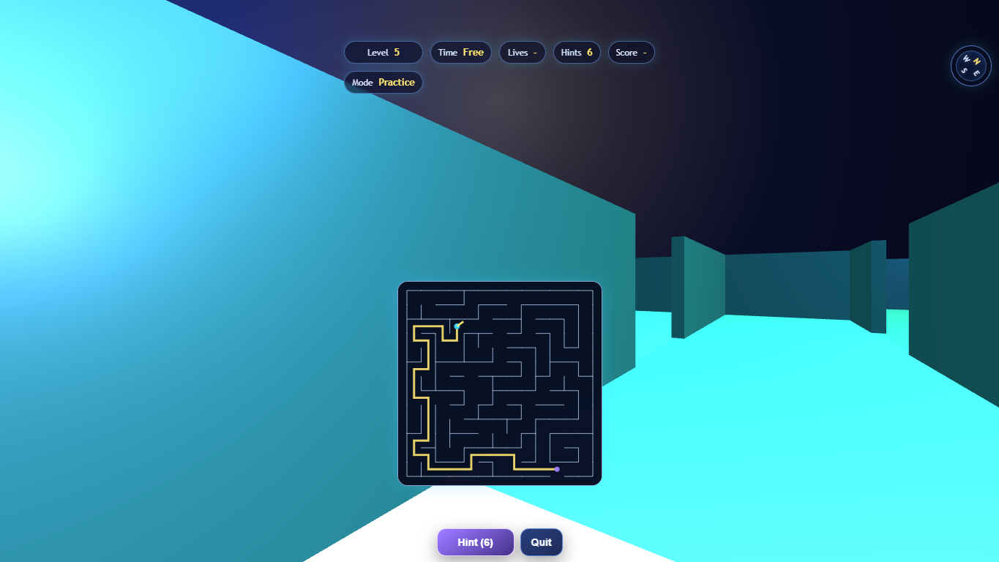
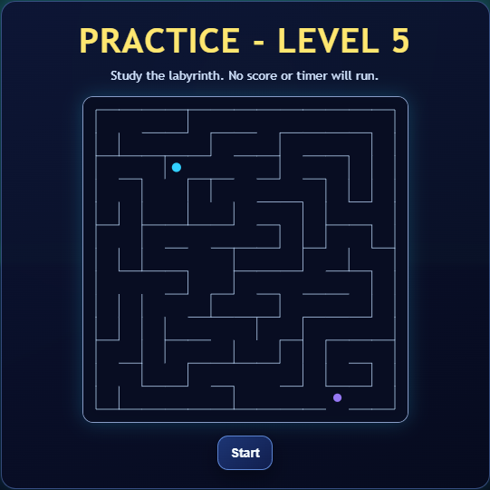
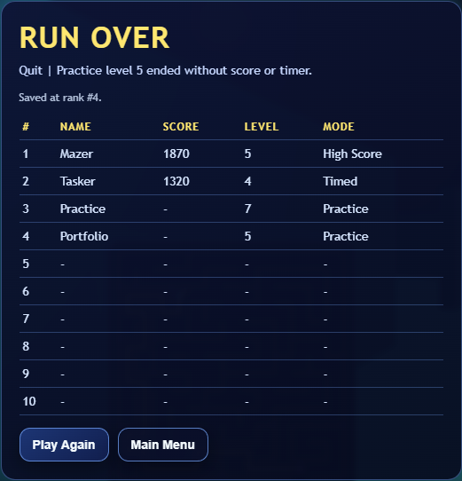

Project
Labyrinth
Single-file first-person maze game · Taskit! mini-game brief · Procedural levels · Mobile controls
Labyrinth began as the design brief for a single game inside the Taskit! app: a compact reward loop where players could spend hard-earned Taskit tokens on hints and lives while trying to escape increasingly difficult, auto-generated mazes. The constraint mattered as much as the gameplay: the whole game needed to live in one file so a Taskit game wrapper could load it cleanly.
It has since grown from a proof-of-concept maze into a more complete standalone game. The current version keeps the original progression idea, adds adaptive timers based on the shortest possible route out of each generated maze, supports mobile joystick play, and now offers Practice, Timed Run, and High Score modes.

Gameplay capture from the game itself: HUD, touch-ready controls, compass rose, hint action, and level colour variation.
Original Taskit! brief
The original concept was a single-file embedded game for Taskit!: complete tasks, earn tokens, and decide whether to spend them on help inside the maze. Hints and extra lives were imagined as meaningful trade-offs, turning productivity rewards into lightweight game strategy without requiring a separate game service or asset pipeline.
Single-file wrapper
HTML, styling, UI, renderer fallback, input handling, scoring, and storage are contained in one page.
Taskit token loop
The brief framed hints and lives as purchases made with earned Taskit tokens.
Procedural challenge
Each level is generated automatically, with larger mazes creating rising difficulty.
Development path
- 1. Proof of concept: a basic first-person maze that proved a generated labyrinth could run as a self-contained browser game.
- 2. Playability: clearer starts and exits, level previews, hints, lives, timeout feedback, and local progress made the game feel less like a demo and more like something with a loop.
- 3. Adaptive scoring: the timer moved from a fixed allowance to one calculated from the shortest path through the generated maze, so longer routes receive fairer time while fast escapes still matter.
- 4. Mobile controls: twin joystick controls made the first-person movement usable on phones, with touch-specific look sensitivity and a wider time allowance.
- 5. Orientation and variety: the compass rose and changing floor colours helped players read direction and level identity inside otherwise similar maze geometry.
- 6. Standalone modes: Practice now allows level selection without score pressure, Timed Run preserves the original countdown challenge, and High Score supports indefinite play with speed-dependent scoring.

The level preview overlay lets the player study the generated maze before movement and timing begin.
Game systems
- Auto-generated mazes with increasing level size and controlled extra openings for loops and false routes.
- Shortest-route calculation used for hints, route-aware timing, and fairer level scoring.
- Hints reveal a route segment in-world and flash a tactical map overlay.
- Lives and timeouts preserve the same maze so players can learn from failed attempts.
- Local progress and scoreboards persist between sessions using browser storage.
- Three.js renderer with a built-in canvas raycasting fallback for resilience.

End-of-run scoreboard capture: name entry, local persistence, level reached, score, and mode.
Current modes
Practice
Choose a level, explore without timers, and use the score screen as an end-of-session record rather than a points chase.
Timed Run
The original mode: clear each maze before the adaptive timer expires, preserve lives, and keep climbing levels.
High Score
Run indefinitely while score rewards how quickly each generated level is escaped.